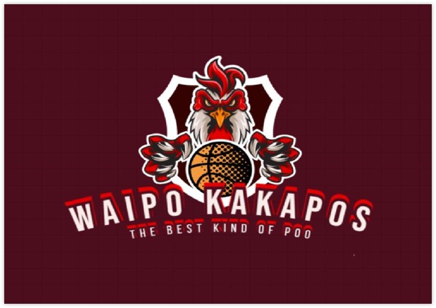

EKIPE
Damjan Ilievski Waipo Kakapos

Team owner: Damjan Ilievski
Joined league: 2024 (season 8)
History: /
Arena: Waipu Arena
Capacity: 5.000
Location: Waipu, New Zealand
Average ranking: 13.0 (15th)
| Sezona | Uvrstitev |
|---|---|
| 2017/18 | ////// |
| 2018/19 | ////// |
| 2019/20 | ////// |
| 2020/21 | ////// |
| 2021/22 | ////// |
| 2022/23 | ////// |
| 2023/24 | ////// |
| 2024/25 | 13 |
| 2025/26 | ... |
| AVERAGE | 13.0 |
Uvodni intervju - DAMJAN ILIEVSKI (september, 2024)
Najprej seveda dobrodošli in veliko sreče. Upamo, da imate dovolj velike ekrane na telefonu, da boste vidni na lestvici brez scrollanja. Sedaj pa nekaj uvodnih vprašanj, da vas malce bolje spoznamo.
1) Pojasnite na kratko širši javnosti ime in maskoto vaše franšize.
Za maskoto sem se odločo, da bo predstavnik aviacije saj rad gledam na ljudi z viška in jim serjem po glavah. Sem pa pred časom slišal za drugo ime sovjega papagaja – Kakapo in sem mi zdi da ime zelo dobro sovpada z mojo ideologijo…
Waipu pa je bil izbran zaradi več razlogov; Nova Zelandija je na mojem »bucket listu«, hkrati pa sem želel ligo razširiti še na Oceanijo, na koncu sem pa iskal kraj, ki se rima z imenom maskote – simpl ko bupasulj.
2) Kakšni so cilji v vaši uvodni sezoni? Imate kakšne fantasy izkušnje iz drugih lig?
Izkušenj s fantasy ligo nimam nobenih, tk da sem iz tega vidika nepopisan list, se pa hitro učim, hkrati pa opažam, da konkurenca ni neki preveč huda tk da mislim, da bom kr hitro med najboljšimi.
Dolgoročni plan je da sem prva ekipa s »Three-peat« in vam pokažem kdo je ata košarke. V prvi sezoni pa mi je čist dojst, da nem rabo prnst gajbe na piknik.
3) S katerim managerjem v ligi imate že sedaj beef in katerega managerja se najbolj bojite?
Bojim se nobenga ne. Js se bojim sam višine, zato sem pa »flightless bird«. Beefa pa nimam, ker sem že v letih in me občasnih matra demenca, tk da hitro pozabim zamere
4) Kdo je vaš najljubši košarkar v ligi in katero vaše najljubše moštvo?
Moj najljubši košarkar je Jimmy Butler III aka Jimmy Buckets, navijam za Miami Heat, KK Dravograd in KŠ Jezerniki Prevalje, na skrivaj pa za Chicago – sam ne okol govort, ker me ja tega malo sram 😊
5) Kaj bo vaš največji doprinos k ligi?
Moj doprinos k ligi je to, da se je z mojim prihodom zamenjal upokojeni veteran z novim veteranom in posledično mal dvigam povprečje starosti, da ni to neka vrtec liga. Na pikniko bom pa pomaga bk pojest pa spit, da se ne bo stran metalo.
Zaključna misel
»Js sploh ne vem za kaj se gre, js tu sam kokice prodajam…«